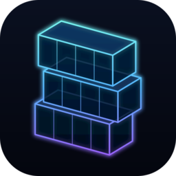
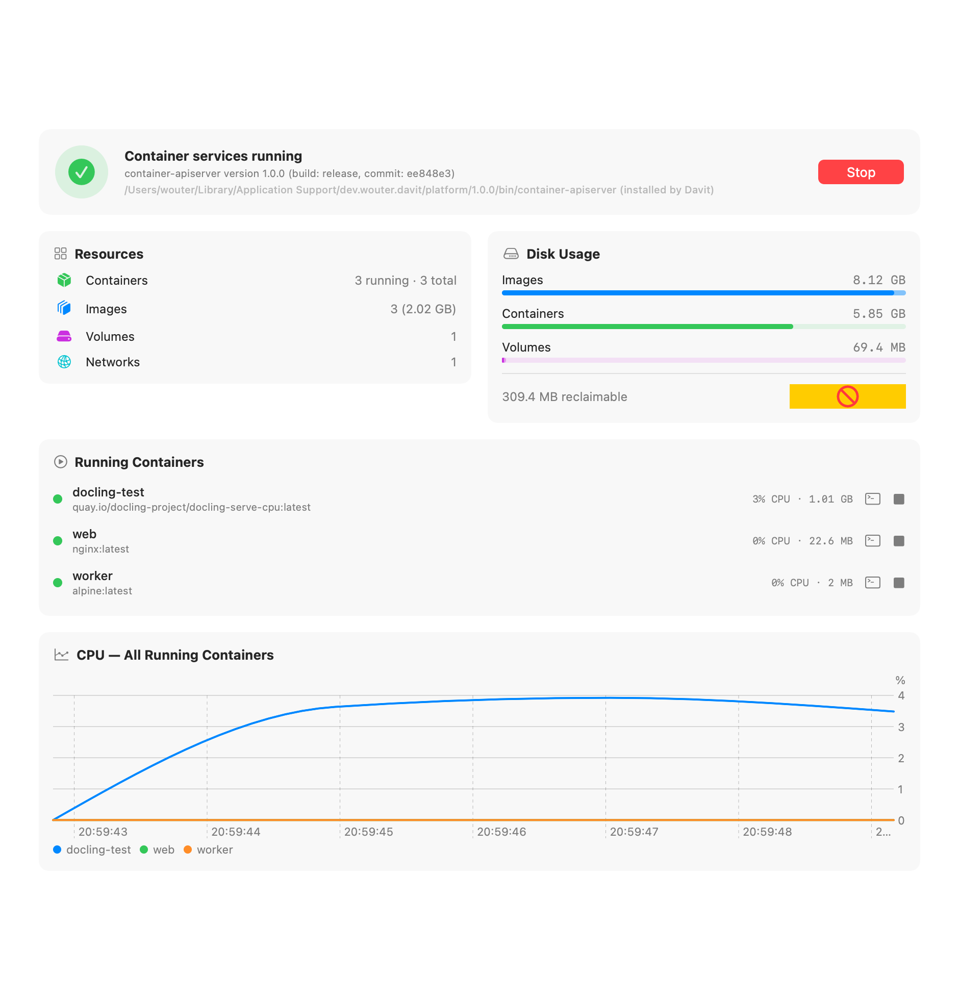
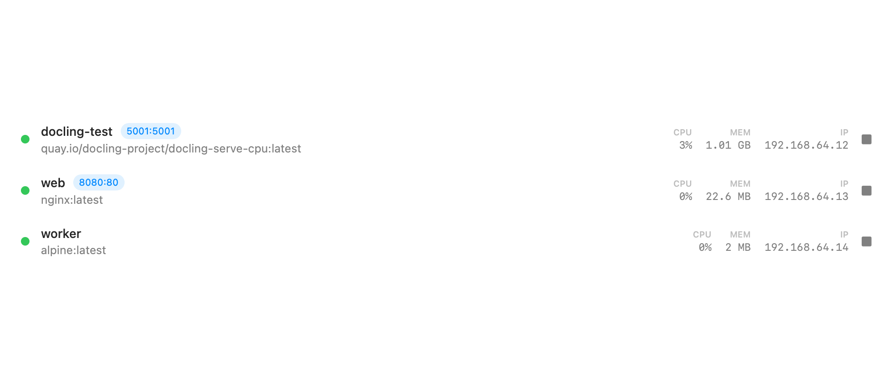
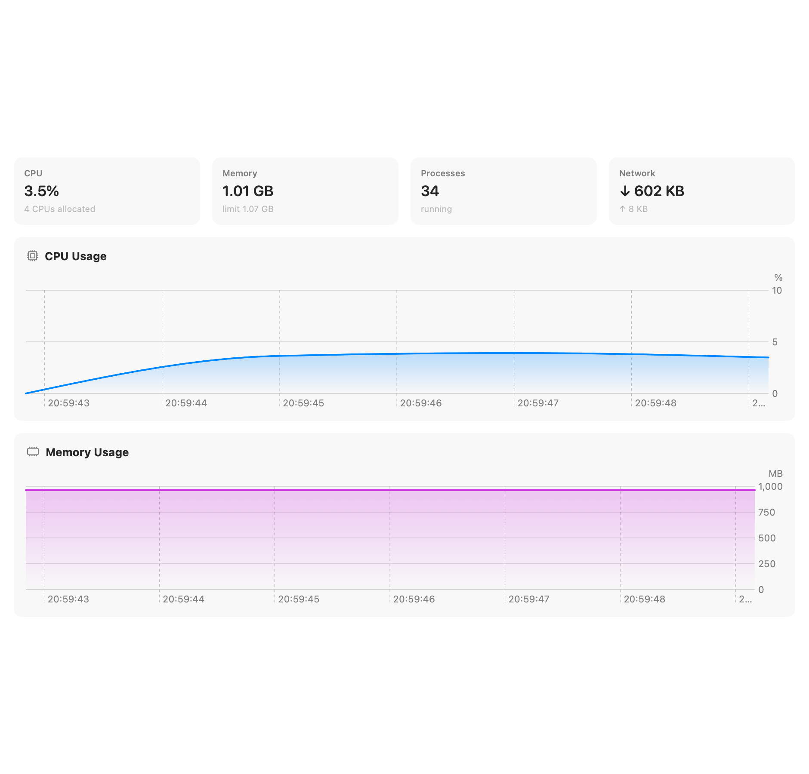
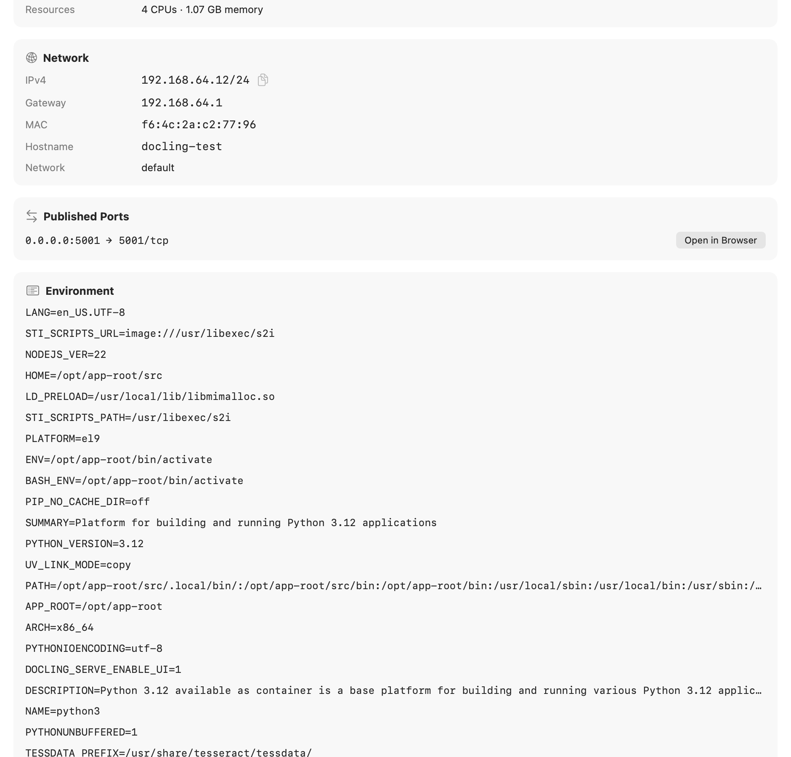
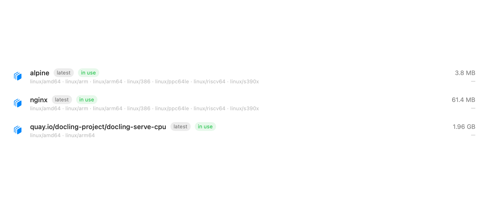

A fully native macOS app for Apple's container platform — run Linux containers on Apple silicon, no Docker Desktop required.
Free & open source · MIT licensed · Signed & notarized
Requires an Apple silicon Mac running macOS 15 or later.
Or via Homebrew: brew install wouterdebie/tap/davit

Davit talks directly to Apple's open-source container daemon over XPC — the same wire path the CLI uses. No Electron, no web views, no background agents of its own.
Start, stop, restart and delete with live CPU, memory and IP on every row. Streaming logs with follow & boot mode, live stat charts, and raw config inspection.
Open an interactive shell in any running container, straight into Terminal or iTerm — over the native API, no CLI needed.
Containers are immutable — so Davit prefills a new one from the old config with the image's entrypoint and env subtracted, letting you change ports, env vars, mounts or resources in seconds.
Pull with live progress, run from any image, tag, prune. Create sized volumes and custom subnets. See what's in use before you delete it.
Default CPU/memory for new containers, registry, DNS, builder resources — edited in the app, validated by the platform's own config loader, saved as clean TOML overrides.
No container platform installed? Davit downloads Apple's signed installer, verifies it, and sets everything up in your user Library — no administrator rights needed. It can add the container CLI to your shell, too.
Built entirely in SwiftUI. Menu bar quick actions, a Dock icon only when you want one, and live charts that don't spin up a browser to render.




From a fresh install to a running container you can open in your browser.
Grab it from Releases or brew install wouterdebie/tap/davit. On first launch, if Apple's container platform isn't installed, Davit sets it up for you — no admin password needed.
Click Images → Pull Image and enter a small image that shows something in the browser:
nginxdemos/helloHit Run on the image (or Containers → Run Container). Set a port mapping — host 8088 → container 80 — and run.
From the container's Ports row, click Open in Browser (or visit localhost:8088). You'll see a page served from inside the container, showing its own hostname and address.
Open the container to watch live CPU, memory and disk, stream logs, drop into a terminal, or Edit & Recreate to change ports, env or resources.
The honest answer is architectural: there's no always-on multi-gigabyte Linux VM. Docker Desktop keeps one big VM running whether or not you have containers; Apple's platform instead boots a separate lightweight VM per container, sized to that container, and tears it down when the container stops. With nothing running, the platform's background services idle at roughly 25 MB. Davit itself is a native SwiftUI app (no Electron) — its footprint is mostly shared macOS framework memory. So the more containers you're not running, the less it costs you.
OrbStack is a polished commercial app with its own Docker-compatible virtualization layer. Davit is free and open source, and is a UI on top of Apple's own container platform — so the engine is Apple's, not a third party's. Both run standard OCI images. If you specifically want Apple's Containerization stack (per-container VMs, Apple-silicon-native), Davit gives you a native front-end for it; if you want a drop-in Docker daemon replacement with broad tooling compatibility, OrbStack is the more mature choice today.
Each container gets its own IP (shown in the container's Network section), so you can always hit it directly. For name-based access, a common trick is to run Avahi inside the guest to broadcast a .local alias over mDNS/zeroconf — see this gist. Built-in name resolution is on the roadmap.
Yes — every release is Developer ID signed and notarized by Apple, so it opens without Gatekeeper warnings. It's open source (MIT); you can read or build it yourself. It talks only to your local container daemon and to GitHub for update checks.
container CLI installed?No. Davit talks to the platform directly over XPC. If the platform isn't present, Davit can download and install Apple's signed package for you on first launch — no admin password required. It can optionally add the container CLI to your shell from Settings if you want it.